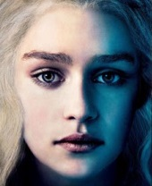

Game Of Thrones
Personnages du Trône de fer

Daenerys Targaryen est l'un des personnages principaux de la saga Le Trône de fer écrite par George R. R. Martin. Elle est la fille légitime du roi Aerys II Targaryen et de la reine Rhaella Targaryen. C'est une jeune fille âgée de treize ans au début de la saga, (seize ans dans l'adaptation série) qui, comme la plupart des caractéristiques physiques des Targaryen, possède des cheveux d'or et d'argent, le teint clair, des yeux d'un violet améthyste clair et une carrure svelte.